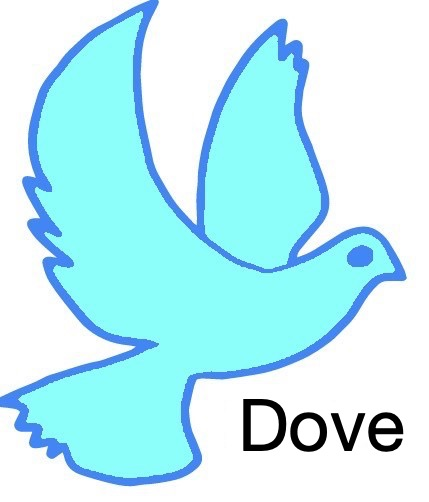

Home
Tutorials
Code
Contact Us
Lab
Home
Tutorials
Code
Contact Us
Lab
A deep-learning based docking decoy evaluation method
Dove Input
Input Docking Model:
Notes: Receptor chain id must be 'A', ligand chain id must be 'B'(PDB format)
Do not include stange character in file name, usually we suggest use name like abc123.pdb as input name
Reference
Docking Model Evaluation by 3D Deep Convo-lutional Neural Networks Xiao Wang, Genki Terashi, Charles W. Christoffer, Mengmeng Zhu, and Daisuke Kihara, In submission (2019)